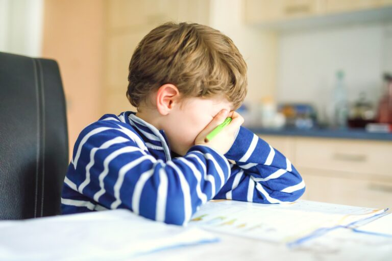
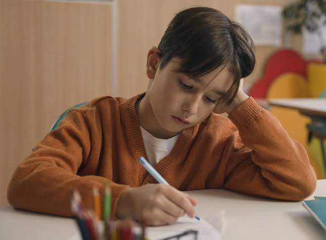

Baja Autoestima en el Rendimiento Escolar
¿Qué es y Cuáles son las Causas?
La baja autoestima es la percepción mayoritariamente negativa, insatisfactoria o de poco valor que una persona tiene sobre sí misma, sus capacidades y sus cualidades. En el ámbito académico, actúa como un filtro distorsionado que hace que los alumnos subestimen su potencial y duden constantemente de sus habilidades.
La baja autoestima no tiene un origen único, sino que surge de la interacción de
factores escolares, familiares y sociales:
• Altas expectativas y presión familiar: Sentir la obligación de cumplir con
estándares perfectos o la constante comparación con hermanos o compañeros.
• Historial de fracasos académicos: Acumular malas calificaciones o dificultades de
aprendizaje no detectadas (como dislexia o TDAH) sin el apoyo adecuado.
• Entorno escolar adverso: Ser víctima de acoso escolar (bullying), exclusión social
o recibir críticas destructivas y etiquetas humillantes por parte de profesores o
pares.
• Perfeccionismo clínico: Desarrollar una autoexigencia extrema donde cualquier
error se interpreta como una falta de valor personal.
Efectos en el Estudiante
Este problema impacta directamente en todas las áreas de la vida del estudiante,
creando un círculo vicioso difícil de romper:
• Rendimiento escolar deficiente: La falta de confianza lleva a la profecía
autocumplida; el estudiante cree que va a reprobar, se desmotiva, no estudia lo
suficiente y termina obteniendo malos resultados.
• Ansiedad ante los exámenes: Experimentar niveles de estrés paralizantes debido
al miedo extremo a fallar y a ser juzgado.
• Conductas de evitación y procrastinación: Retrasar la entrega de tareas o no
participar en clase para evitar el riesgo de equivocarse en público.
• Aislamiento y problemas sociales: Dificultad para hacer amigos o defender los
propios derechos por timidez extrema o miedo al rechazo.
• Trastornos de salud men tal: Mayor vulnerabilidad a padecer síntomas de
depresión, trastornos de la conducta alimentaria (TCA) o recurrir a conductas
autodestructivas.
Galería

